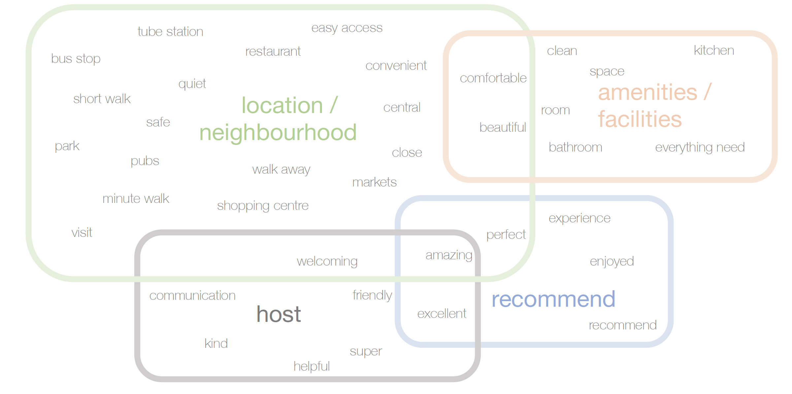

#1. On Ratings
From the perspective of prospective Airbnb hosts, we find an airbnb’s neighbourhood location to be a significant predictor of overall guest ratings in Hackney, Hillingdon, Tower Hamlets, Hammersmith and Fulham, although this spatial influence appears less important than guests’ scoring of a listings’ accuracy of advertising, cleanliness and value, suggesting hosts perform well by paying attention to enhancing these aspects. Median house price and median age of a borough significantly influence average airbnb price, raising questions about extent of participation in Airbnb economy as both host and guest being limited to an affluent, younger demographic, potentially generating new forms of socio-economic polarisation.
#2. On Consumer Segmentation in Airbnb market
Median house price and median age explain 84% of variance in average prices of your listing. If you’re a host setting up your house on Airbnb in an area with high prices, you can expect to benefit from a spillover effect between your Airbnb price and the residential property market.
#3. 5 clusters of neighbourhoods vary most in average price per night, with smaller variations across ratings categories.
Although these are often regarded as popular, touristic boroughs in the city centre and command higher listing prices. If you’re in Westminster or Kensington and Chelsea, your listing performs on average less well compared to other boroughs.
#4. On the impact of your opinions and sentiments and your priorities as a guest.
Location and geographical proximity to points of interests if you’re staying central (zone 1-2) is a must. As you move away from the centre (zone 2-3), you are more likely to prioritise mode of transport and ease of access to the center, while quality of amenities/facilities is your top priority if in zones 4+. No matter where you are staying in London, you will look for comfort and good communication with your host.
